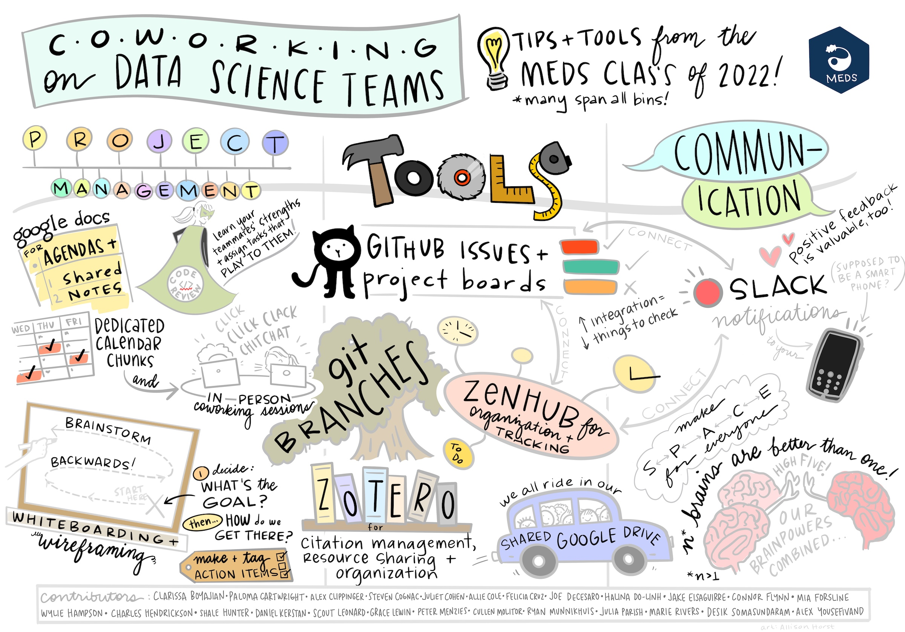

EDS 214: Analytical Workflows and Scientific Reproducibility
Course description
The generation and analysis of environmental data is often a complex, multi-step process that may involve the collaboration of many people. Increasingly tools that document and help to organize workflows are being used to ensure reproducibility, shareability, and transparency of the results. This course will introduce students to the conceptual organization of workflows (including code, documents, and data) as a way to conduct reproducible analyses. These concepts will be combined with the practice of various software tools and collaborative coding techniques to develop and manage multi-step analytical workflows as a team.
Why going reproducible ?
There are many reasons why it is essential to make your science reproducible and how the necessity of openness is a cornerstone of the integrity and efficacy of the scientific research process. Here we will also be focusing on why making your work reproducible will empower you to iterate quickly, integrate new information more easily to iterate quickly, scale your analysis to larger data sets, and better collaborate by receiving feedback and contributions from others, as well as enable your “future self” to reuse and build from your own work.
To make your data-riven research reproducible, it is important to develop scientific workflows that will be relying on programming to accomplish the necessary tasks to go from the raw data to the results (figures, new data, publications, …) of your analysis. Scripting languages, even better open ones, such as R and python, are well-suited for scientists to develop reproducible scientific workflows. Those scripting languages provide a large ecosystem of libraries (also referred to as packages or modules) that are ready to be leveraged to conduct analysis and modeling. In this course we will introduce how to use R, git and GitHub to develop such workflows as a team.

tidyverse. Note the program box around the workflow and the iterative nature of the analytical process described. Source: R for Data Science https://r4ds.had.co.nz/Two points to stress about this figure:
- Workflows are rarely linear… even less so their implementation
- Note the programming box – yes, you’ll need to code this :)
Workflows are developed iteratively, and one of the most helpful things you can do as a data scientist is to talk about them with your research team.
Teaching team
Julien Brun, Instructor
Brian Lee, TA
MEDS Slack is the best way to communicate with us.
Important links
Predictable daily schedule
Course dates: Monday (2024-08-26) - Friday (2024-08-30)
EDS 214 is an intensive 1-week long graded 2-unit course. Students should plan to attend all scheduled sessions. All course requirements will be completed between 10am and 5pm PST (M - F), i.e. you are not expected to do additional work for EDS 214 outside of those hours, unless you are working with the Teaching Assistant in student hours.
Daily schedule (subject to change):
| Time (PST) | Activity |
|---|---|
| 10:00am - 10:50am | Lecture (50 min) |
| 10:50am - 11:00am | Break (10 min) |
| 11:00am - 12:30am | Interactive Session 1 (90 min) |
| 12:30am - 1:30pm | Lunch (60 min) |
| 1:30pm - 2:00pm | Lecture (30 min) |
| 2:00pm - 3:00pm | Interactive Session 2 (60 min) |
| 3:00pm - 3:10pm | Break (10 min) |
| 3:10pm - 4:00pm | Flex time + Q&A (50 min) |
Learning objectives
The goal of EDS 214 - Analytical Workflows and Scientific Reproducibility is to expose incoming MEDS students to “good enough” practices of scientific programming develop skills in environmental data science to produce reproducible research. By the end of the course, students should be able to:
Develop knowledge in scientific analytical workflows To learn how to make your data-riven research reproducible, it is important to develop scientific workflows that will be relying on programming to accomplish the necessary tasks to go from the raw data to the results of your analysis (figures, new data, publications, …). Scripting languages, even better open ones such as
Randpython, are well-suited for scientists to develop reproducible scientific workflows, but are not the only tools you will need to develop reproducible and collaborative workflowsLearn how to code in a collaborative manner by practicing techniques such as code review and pair programming. Become comfortable asking for and conducting code review using
gitandGitHubto create pull request, ask feedback from peers, and merge changes into the main repository. Practice pair programming to cement the collaborative development of reproducible analytical workflowsPractice documenting code and data in a systematic way that will enable your collaborators, including your future self, to understand and reuse your work
Grading
The grading for this course is organized as follow:
- 50% Class participation
- 50% Group project
Sessions (subject to change)
| Day / Session | Topics | Interactive Sessions |
|---|---|---|
| Monday morning | Reproducible workflows | Planning things: from flow charts to pseudocode |
| Monday afternoon | Coding together | Collaborating with GitHub; Github collaboration Hands-on; Bonus: Github conflicts |
| Tuesday morning | Working on a remote server | the command line and friends |
| Tuesday afternoon | Automating things with bash |
bash scripting & uploading things |
| Wednesday morning | How to get data using APIs | APIs hands-on: USGS dataretrieval & metajam |
| Wednesday afternoon | Introduction to group project | Group project |
| Thursday morning | Reproducible tools | targets & rrtools as examples |
| Thursday afternoon | Documenting things | Group project |
| Friday morning | Sharing things | Group project |
| Friday afternoon | Project presentations | Project presentations |
Course requirements
Computing
Minimum MEDS device requirements
Have a ready to be used GitHub Account (https://github.com/){target=“_blank”}
Textbook
- R for Data Science, 2nd edition: https://r4ds.hadley.nz/
- The Practice of Reproducible Research: http://www.practicereproducibleresearch.org/